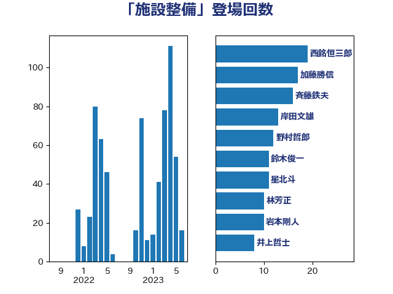

単語「施設整備」

| 西銘恒三郎 | 自由民主党 | 19 回 |
| 加藤勝信 | 自由民主党 | 17 回 |
| 斉藤鉄夫 | 公明党 | 16 回 |
| 岸田文雄 | 自由民主党 | 13 回 |
| 野村哲郎 | 自由民主党 | 12 回 |
| 鈴木俊一 | 自由民主党 | 11 回 |
| 星北斗 | 自由民主党 | 11 回 |
| 林芳正 | 自由民主党 | 10 回 |
| 岩本剛人 | 自由民主党 | 10 回 |
| 井上哲士 | 日本共産党 | 8 回 |
| 緑川貴士 | 立憲民主党 | 7 回 |
| 田村貴昭 | 日本共産党 | 6 回 |
| 浜田靖一 | 自由民主党 | 6 回 |
| 末松信介 | 自由民主党 | 6 回 |
| 鬼木誠 | 立憲民主党 | 5 回 |
| 角田秀穂 | 公明党 | 5 回 |
| 盛山正仁 | 自由民主党 | 5 回 |
| 掘井健智 | 日本維新の会 | 5 回 |
| 小西洋之 | 立憲民主党 | 5 回 |
| 青山大人 | 立憲民主党 | 4 回 |
| 金子恭之 | 自由民主党 | 4 回 |
| 野中厚 | 自由民主党 | 4 回 |
| 萩生田光一 | 自由民主党 | 4 回 |
| 田名部匡代 | 立憲民主党 | 4 回 |
| 武部新 | 自由民主党 | 4 回 |
| 木村次郎 | 自由民主党 | 4 回 |
| 川田龍平 | 立憲民主党 | 4 回 |
| 宮崎雅夫 | 自由民主党 | 4 回 |
| 今井絵理子 | 自由民主党 | 4 回 |
| 鰐淵洋子 | 公明党 | 3 回 |
| 高橋光男 | 公明党 | 3 回 |
| 高木かおり | 日本維新の会 | 3 回 |
| 須藤元気 | 無所属 | 3 回 |
| 長谷川淳二 | 自由民主党 | 3 回 |
| 西岡秀子 | 国民民主党 | 3 回 |
| 落合貴之 | 立憲民主党 | 3 回 |
| 自見はなこ | 自由民主党 | 3 回 |
| 神谷裕 | 立憲民主党 | 3 回 |
| 石橋通宏 | 立憲民主党 | 3 回 |
| 早坂敦 | 日本維新の会 | 3 回 |
| 徳永エリ | 立憲民主党 | 3 回 |
| 後藤茂之 | 自由民主党 | 3 回 |
| 庄子賢一 | 公明党 | 3 回 |
| 岡田直樹 | 自由民主党 | 3 回 |
| 安江伸夫 | 公明党 | 3 回 |
| 佐藤正久 | 自由民主党 | 3 回 |
| 下野六太 | 公明党 | 3 回 |
| 三浦信祐 | 公明党 | 3 回 |
| 金子俊平 | 自由民主党 | 2 回 |
| 輿水恵一 | 公明党 | 2 回 |
| 舟山康江 | 国民民主党 | 2 回 |
| 羽生田俊 | 自由民主党 | 2 回 |
| 米山隆一 | 立憲民主党 | 2 回 |
| 簗和生 | 自由民主党 | 2 回 |
| 笠井亮 | 日本共産党 | 2 回 |
| 秋野公造 | 公明党 | 2 回 |
| 石原正敬 | 自由民主党 | 2 回 |
| 渡辺博道 | 自由民主党 | 2 回 |
| 浮島智子 | 公明党 | 2 回 |
| 浜地雅一 | 公明党 | 2 回 |
| 永岡桂子 | 自由民主党 | 2 回 |
| 横沢高徳 | 立憲民主党 | 2 回 |
| 根本幸典 | 自由民主党 | 2 回 |
| 松本剛明 | 自由民主党 | 2 回 |
| 松川るい | 自由民主党 | 2 回 |
| 川合孝典 | 国民民主党 | 2 回 |
| 山田勝彦 | 立憲民主党 | 2 回 |
| 小林鷹之 | 自由民主党 | 2 回 |
| 国光あやの | 自由民主党 | 2 回 |
| 古屋範子 | 公明党 | 2 回 |
| 井上貴博 | 自由民主党 | 2 回 |
| 高橋はるみ | 自由民主党 | 1 回 |
| 高木真理 | 立憲民主党 | 1 回 |
| 音喜多駿 | 日本維新の会 | 1 回 |
| 青柳陽一郎 | 立憲民主党 | 1 回 |
| 階猛 | 立憲民主党 | 1 回 |
| 長友慎治 | 国民民主党 | 1 回 |
| 鈴木宗男 | 日本維新の会 | 1 回 |
| 野間健 | 立憲民主党 | 1 回 |
| 野田聖子 | 自由民主党 | 1 回 |
| 進藤金日子 | 自由民主党 | 1 回 |
| 谷合正明 | 公明党 | 1 回 |
| 西田実仁 | 公明党 | 1 回 |
| 西村智奈美 | 立憲民主党 | 1 回 |
| 藤木眞也 | 自由民主党 | 1 回 |
| 菅家一郎 | 自由民主党 | 1 回 |
| 芳賀道也 | 国民民主党 | 1 回 |
| 船橋利実 | 自由民主党 | 1 回 |
| 臼井正一 | 自由民主党 | 1 回 |
| 細田健一 | 自由民主党 | 1 回 |
| 紙智子 | 日本共産党 | 1 回 |
| 笠浩史 | 無所属 | 1 回 |
| 竹谷とし子 | 公明党 | 1 回 |
| 穀田恵二 | 日本共産党 | 1 回 |
| 矢倉克夫 | 公明党 | 1 回 |
| 田畑裕明 | 自由民主党 | 1 回 |
| 田中健 | 国民民主党 | 1 回 |
| 熊田裕通 | 自由民主党 | 1 回 |
| 渡辺孝一 | 自由民主党 | 1 回 |
| 渡辺創 | 立憲民主党 | 1 回 |
| 清水貴之 | 日本維新の会 | 1 回 |
| 河野義博 | 公明党 | 1 回 |
| 水野素子 | 立憲民主党 | 1 回 |
| 横山信一 | 公明党 | 1 回 |
| 松野明美 | 日本維新の会 | 1 回 |
| 松沢成文 | 日本維新の会 | 1 回 |
| 本田太郎 | 自由民主党 | 1 回 |
| 日下正喜 | 公明党 | 1 回 |
| 斎藤洋明 | 自由民主党 | 1 回 |
| 斎藤嘉隆 | 立憲民主党 | 1 回 |
| 平林晃 | 公明党 | 1 回 |
| 岩渕友 | 日本共産党 | 1 回 |
| 山本剛正 | 日本維新の会 | 1 回 |
| 山崎正恭 | 公明党 | 1 回 |
| 山岡達丸 | 立憲民主党 | 1 回 |
| 山下貴司 | 自由民主党 | 1 回 |
| 小野田紀美 | 自由民主党 | 1 回 |
| 小田原潔 | 自由民主党 | 1 回 |
| 小林茂樹 | 自由民主党 | 1 回 |
| 小宮山泰子 | 立憲民主党 | 1 回 |
| 宮本徹 | 日本共産党 | 1 回 |
| 宮本岳志 | 日本共産党 | 1 回 |
| 大西健介 | 立憲民主党 | 1 回 |
| 大塚拓 | 自由民主党 | 1 回 |
| 吉良よし子 | 日本共産党 | 1 回 |
| 古川禎久 | 自由民主党 | 1 回 |
| 前原誠司 | 国民民主党 | 1 回 |
| 倉林明子 | 日本共産党 | 1 回 |
| 佐藤英道 | 公明党 | 1 回 |
| 井野俊郎 | 自由民主党 | 1 回 |
| 中川郁子 | 自由民主党 | 1 回 |
| 中川宏昌 | 公明党 | 1 回 |
| 上野通子 | 自由民主党 | 1 回 |
| 上田英俊 | 自由民主党 | 1 回 |
| 三上えり | 立憲民主党 | 1 回 |
| おおつき紅葉 | 立憲民主党 | 1 回 |